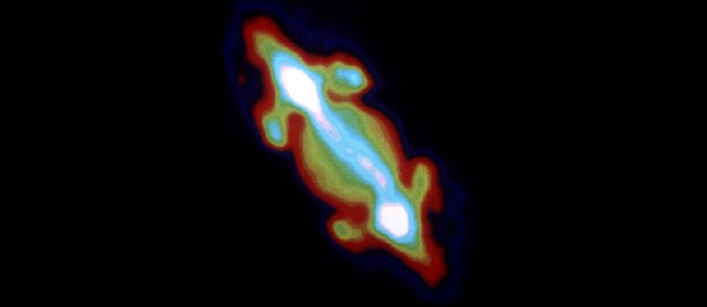

ASTR101 Ch 11-13
Ch 11 - The Giant Planets
Exploring the Outer Planets
- Among planets, giant planets hold most of the mass.
- Jupiter's mass exceeds all other planets combined.
- Composed of three classes of material:
- Gases: Primarily hydrogen and helium.
- Ices: Solid state compounds forming from oxygen, carbon, and nitrogen (eg, water, methane, ammonia, carbon monoxide, carbon dioxide, etc.).
- Rocks: Least abundant class, includes magnesium, silicon, iron, etc.
- Gases make approximately 98.6%, ice 1.1%, and rock .3% of the outer solar system.
- Outer solar system is reducing, meaning that elements tend to combine with hydrogen first.
- That means oxygen tends to form water (H2O) before it forms things like methane (CH4) or ammonia (NH3).
- This is why giant planet compositions are mostly hydrogen-based gases.
Exploration of the Outer Solar System So Far
- Eight spacecraft (7 from U.S., one from Europe) have penetrated beyond asteroid belt into outer solar system.
- Flight times are years–decades (months for inner solar system).
- Hours of delay for spacecraft to communicate to Earth and be fixed!
- Sun is too far away to provide spacecraft with enough energy.
- Heaters required for spacecraft components, strong radio required.
- 1972-3: Pioneer 10 and 11: "Can we get past the asteroid field and survive Jupiter's magnetosphere (region of magnetic influence)? Pioneer 11 gravity assists to Saturn.
- 1977: Voyager 1 and 2: cameras, spectrometers, magnetosphere measurement devices. Voyager 1 flew to Saturn and Voyager 2 to all the outer planets; Jupiter (1980), Saturn (1981), Uranus (1986), and Neptune (1989) in "Grand Tour" made possible by once in 175-year alignment of giant planets!
- Earth to Neptune is 4.8 billion km. Voyager 2's signals at Earth were weaker than the power it takes to operate a digital watch (10-16 W), and was collected by 38 different antennas on four continents!
Enter the Orbiters: Galileo, Cassini, and Juno
- The spacecraft discussed so far conducted flyby missions (it is what it sounds like).
- Galileo, Cassini, and Juno are orbiting spacecraft!
- Galileo launched 1989, arrived 1995. It deployed a probe onto Jupiter, whose massive gravity accelerated it to 50 km/s (enough speed to cross continental US in under 2 minutes) and heated its heat shield to 15,000 °C. The probe took data as it descended 200 km into the atmosphere for an hour, two hours later Galileo fired retro-rockets to be captured in Jupiter's orbit, to study Jupiter's moons.
- Cassini (U.S. and Europe) launched 1997 and arrived in Saturn's orbit in 2004 to study its rings and moons, deploying an entry probe in 2005 into Titan, which landed on the surface!
- Juno arrived at Jupiter in July 2016 to study the magnetosphere with an eccentric orbit from 4,000 km above clouds to 76,000 km.
The Giant Planets
Basic Characteristics
- Jupiter is 5 AU from Sun with period of ~12 years.
- Saturn is 10 AU from Sun with period of ~30 years.
- Uranus is 19 AU from Sun with period of 85 years.
- Neptune is 30 AU from Sun with period of 165 years.
- …So finding seasonal trends is difficult.
- Jupiter and Saturn share similarities but differ and Uranus and Neptune share different similarities.
- Jupiter could fit 1400 Earths inside its volume, and has the mass of more than 318 Earths, despite a low density of 1.3 g/cm3.
- Saturn is 95 times Earth's mass with an even lower density, 0.7 g/cm3, less than the density of water!
- Uranus and Neptune are about 15 Earth masses with densities of 1.3 and 1.6 g/cm3 respectively.
Appearance and Rotation
- We see gases of ammonia crystals of Jupiter and Saturn, methane clouds of Neptune, and no obvious cloud layer on Uranus from outside of them.

- Can't tell much about spin period from optical data, but can from radio data from its magnetic field!
- Jupiter has period of 9h56, shorter than any other planet! Saturn's period is 10h40, and Uranus and Neptune have about 17h spin periods.
- Earth and Mars had seasons because of the tilt of their spin. Do Jovian planets have seasons?
- Jupiter is tilted by only 3°, so no observable seasons.
- Saturn is tilted 27°, so it does experience seasons.
- Neptune has tilt of 29°, so it has seasons (slower than Neptune).
- Uranus is tilted by 98° (spinning on its side, as are its ring and moon system!).


Composition and Structure
- Jupiter and Saturn theorized to be composed of hydrogen and helium.
- Difficult to discuss inner composition since such pressures are unavailable on Earth.
- Hydrogen becomes a liquid due to pressures inside Jupiter and Saturn, and deeper still becomes a metal, which it never does on Earth. Most of Jupiter's interior is liquid metallic hydrogen.
- Most of Saturn's interior is liquid.
- Uranus and Neptune don't liquefy hydrogen as they are too small.
- Each outer planet has a core of heavier materials (concluded from their gravitational fields); presumably what attracted the gas that became their atmospheres.

Internal Heat Sources
- Collapse of material into their core during formation caused the planets to heat up considerably.
- Jupiter had the most heat (why?).
- Giant planets could still be generating heat with slow contracting.
- Internal heat sources result in the planet having more heat than it would have from the Sun alone.
- Jupiter has the largest internal energy source, 4×107 W, about the same as what it absorbs from the Sun! This makes its atmosphere something between a star's (fully internal energy) and a planet's (nearly all energy from Sun). Mostly primordeal heat.
- Saturn has half this much internal energy, producing twice as much energy/kg as Jupiter—how? Still differentiating; helium is still sinking towards the core, releasing gravitational energy.
- Neptune has a small internal energy source, Uranus has none, and they have about the same temperature. Unclear why they have different internal heat.
Magnetic Fields
- Giant planets have a strong magnetic field and magnetospheres millions of kilometers wide.
- Jupiter emits radio waves more intense at higher frequencies, the opposite of what is expected by thermal radiation alone. This turns out to be synchrotron radiation, radiation emitted by electrons when they are accelerated. Comes from Jupiter's "Van Allen belt", which is many times its diameter.

- Axes of magnetic fields (N and S magnetic poles) differ from the spin axis by 10°, 60°, 55°, and 0° for Jupiter, Uranus, Neptune, and Saturn, respectively.